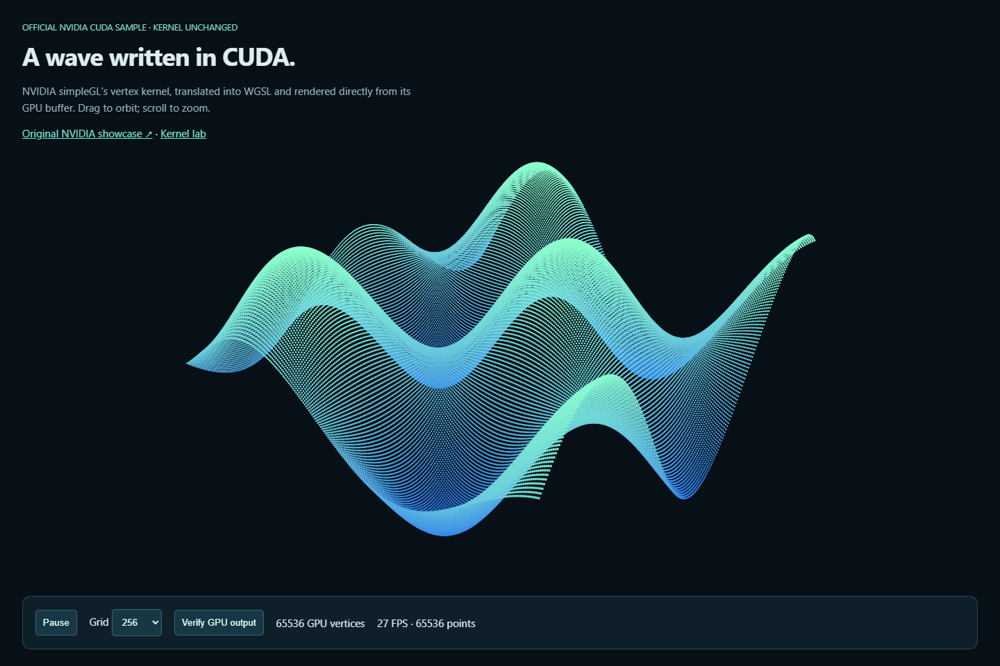
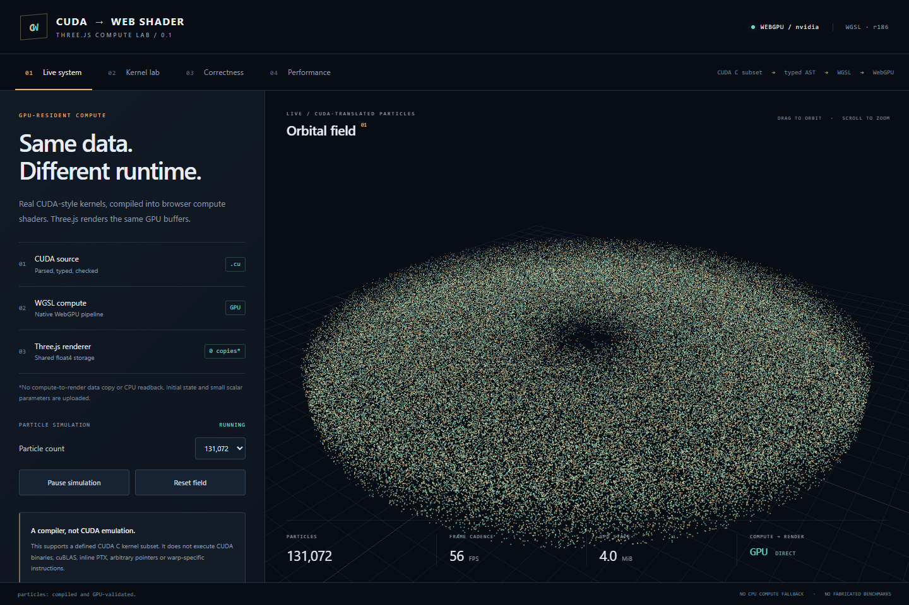

OFFICIAL NVIDIA SAMPLENVIDIA sine wave
The original simpleGL vertex kernel, unchanged. Orbit a moving surface with up to a million GPU-generated points.
12 native CUDA checks12 WebGPU checks
Explore live GPU experiments, inspect the CUDA behind them, and compare the results with native execution on an RTX 5080.

OFFICIAL NVIDIA SAMPLEThe original simpleGL vertex kernel, unchanged. Orbit a moving surface with up to a million GPU-generated points.

PROJECT SHOWCASEA GPU-resident particle simulation and live kernel workbench. Edit CUDA, inspect generated WGSL, and test the actual GPU.
Ten kernel implementations, two workload sizes. Explore real GPU timings, native CUDA comparisons, and every raw sample.
No showcases match. Try another search or category.
The browser translates a supported subset of CUDA C into WGSL. Native comparisons use NVCC on an NVIDIA GPU. Each showcase explains its source, validation, and any host-side adaptation.